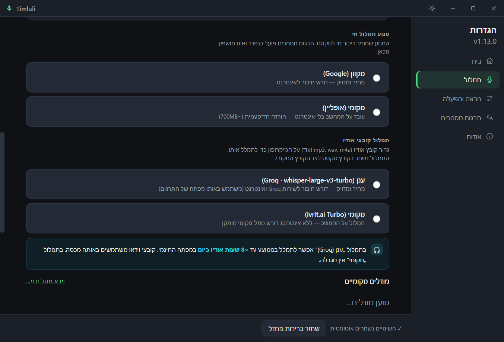
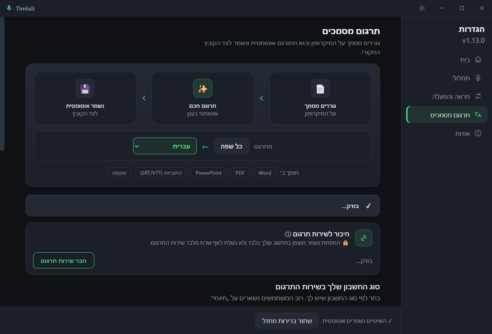
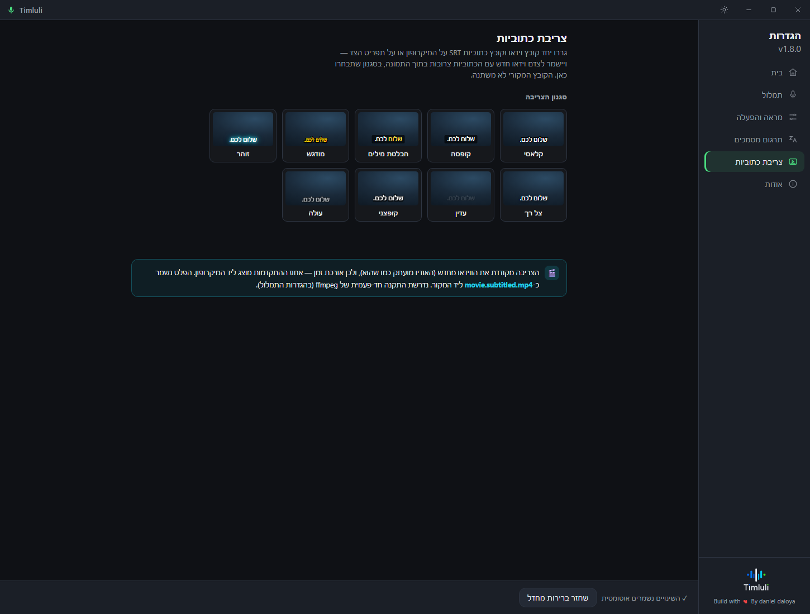
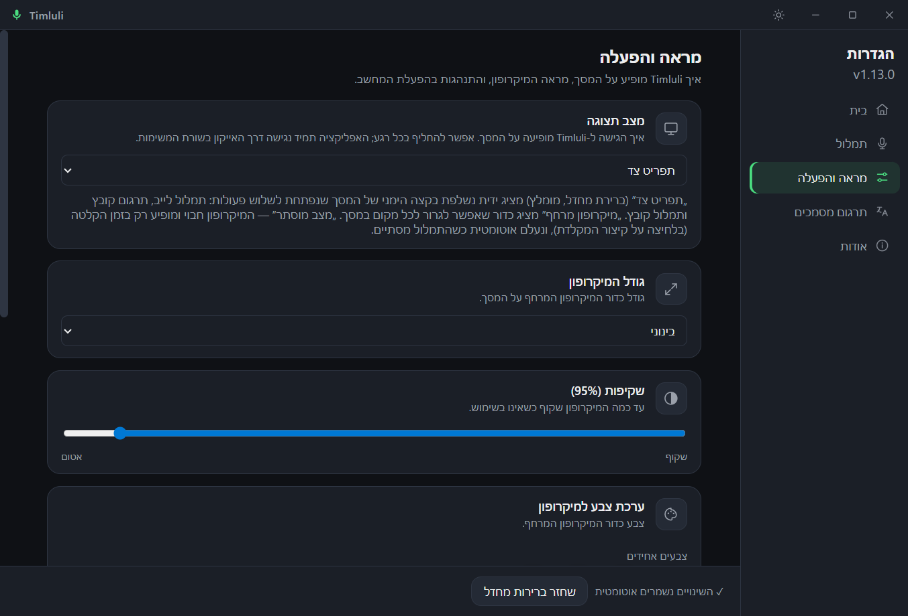
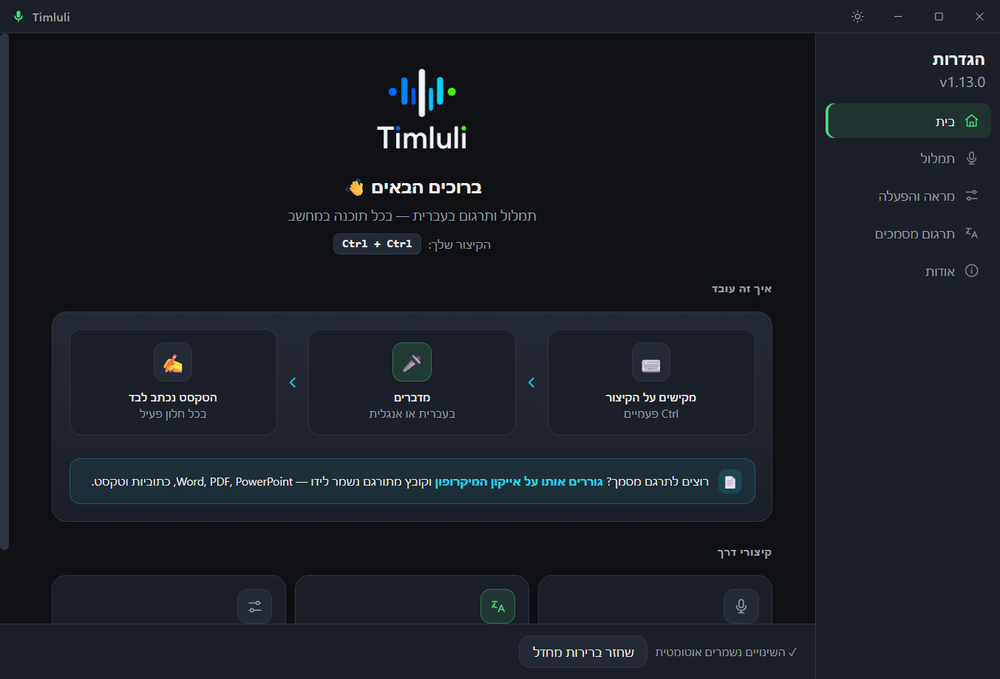
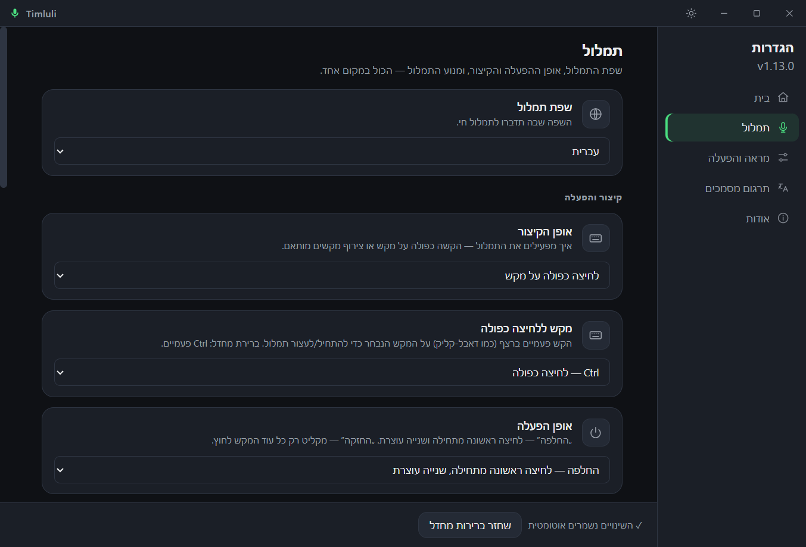
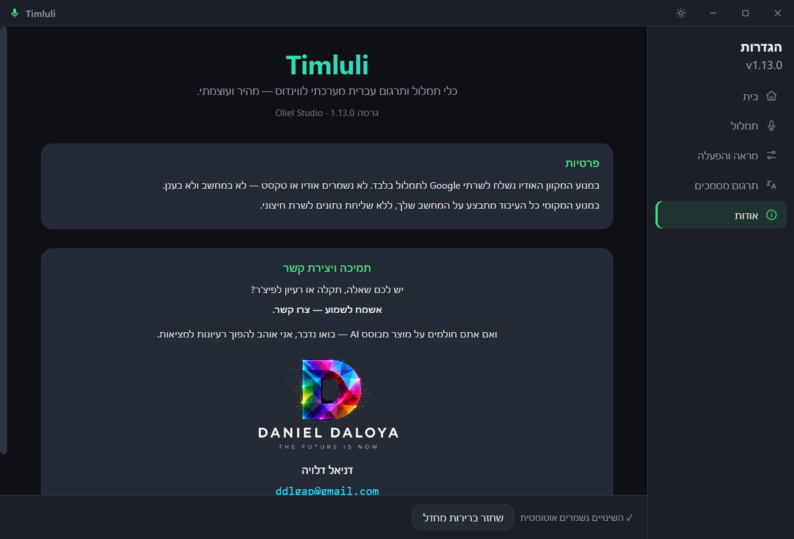
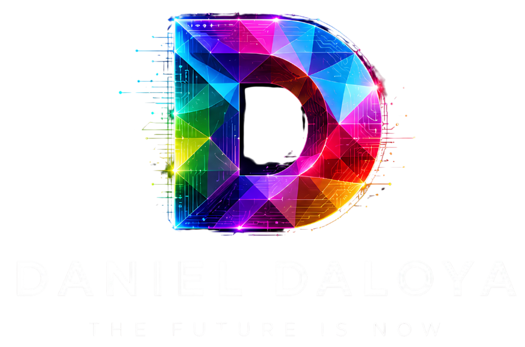

תמלול
דברו בעברית או באנגלית בכל אפליקציה — והטקסט נכתב מעצמו לחלון הפעיל. מקוון לדיוק מרבי, או אופליין לפרטיות מלאה.
עוד על המנועיםTimluli מתמלל עברית ואנגלית בכל אפליקציה בווינדוס. הקש קיצור, דבר — והטקסט מוזרק ישירות לחלון הפעיל. מקוון או אופליין, עם פיסוק אוטומטי ותרגום מסמכים.
דברו בעברית או באנגלית בכל אפליקציה — והטקסט נכתב מעצמו לחלון הפעיל. מקוון לדיוק מרבי, או אופליין לפרטיות מלאה.
עוד על המנועיםגוררים מסמך ומקבלים תרגום לעברית עם עיצוב ופריסה משומרים — טקסט, טבלאות, לוגואים ומשוואות נשארים בדיוק במקומם.
עוד על התרגוםגוררים קובץ אודיו או וידאו — ומקבלים תמלול מלא או כתוביות SRT מסונכרנות. גוררים וידאו+SRT יחד — והכתוביות נצרבות לתוך הסרטון ב-9 סגנונות.
כל התכונותשתי דרכים לתמלל, פיסוק חכם, ותרגום מסמכים — הכל מתוך כפתור מיקרופון אחד.
בחרו את המנוע שמתאים לכם — או החליפו ביניהם בלחיצה. שניהם תומכים בעברית ובאנגלית.

כתוביות, טקסט ומסמכים מתורגמים אוטומטית דרך Groq/Cerebras, עם שרשרת גיבוי חכמה. המקור לא משתנה — נשמר עותק חדש לידו.

גוררים את שני הקבצים יחד על המיקרופון, ו-Timluli צורב את הכתוביות לתוך התמונה — מקומית לחלוטין, בלי להעלות שום דבר לענן. המקור לא משתנה.

צבעים אחידים, גרדיאנטים, או ספירת אנימציה תלת-ממדית. שליטה מלאה בגודל, בשקיפות ובמיקום על המסך.

נקודות, פסיקים וסימני שאלה משוחזרים על התמלול — בלי לומר "נקודה" בקול. רץ מקומית (ONNX), שום טקסט לא יוצא מהמחשב.
במנוע המקוון המילים מוקלדות לשדה היעד תוך כדי הדיבור — לא רק בסוף המשפט, ובלי לדרוס טקסט קיים.
הקשה כפולה על Ctrl, או כל צירוף שתבחרו. מצב Toggle — לחיצה להתחיל, לחיצה לסיים.
תמיכת Vulkan אופציונלית מאיצה את ה-inference של Whisper המקומי על כרטיסי מסך נתמכים.
אין שמירת אודיו, תמלולים או היסטוריה — לא בדיסק ולא בענן. מפתחות API מוצפנים ב-DPAPI.
יושב בשקט ב-system tray עם תפריט קליק-ימני, ויכול לעלות אוטומטית עם הפעלת Windows.
בכל אפליקציה, מכל שדה טקסט — Ctrl+Win+Space (או הקשה כפולה על Ctrl). Timluli זוכר את החלון הפעיל.
המיקרופון נדלק ומתמלל בזמן אמת. עוצרים לרגע — והתמלול ננעל אוטומטית (זיהוי שתיקה).
הטקסט המפוסק נכתב ישירות לחלון שהיה בפוקוס — כקלט מקלדת אמיתי, בדיוק במקום שבו עצרתם.
ממשק כרטיסים מעוצב מחדש עם מסך בית ומצב בהיר/כהה — שליטה מלאה בלי להציף. לחצו להגדלה.



אתם בוחרים כמה נשאר מקומי. הנה בדיוק מה קורה לנתונים בכל מסלול.
| מסלול | אודיו לשרת | שמירה מקומית | דורש אינטרנט |
|---|---|---|---|
| Web Speech (מקוון) | כן · Google | לא נשמר | כן |
| Whisper (אופליין) | לא | לא נשמר | לא* |
| פיסוק אוטומטי | לא · במחשב | לא נשמר | לא* |
| תרגום מסמכים | טקסט בלבד | קובץ פלט בלבד | כן |
* דורש הורדה חד-פעמית של המודל. לאחר מכן עובד לחלוטין ללא אינטרנט.
קובץ ההתקנה נסרק במנועי אבטחה מובילים, עם אפס זיהויים. זו בדיוק אותה גרסה שתורידו מ-GitHub.
MD5: 3b20408da8260f9b460aaeb4cb163111
SHA-1: 9e328d3de897482b258bc56ccff88fe9f8a6b102

Timluli הוא מוצר של Oliel Studio — סטודיו שבונה כלים מבוססי־AI שהופכים רעיונות למציאות. אוטומציות, מוצרים וחוויות שמרגישים מהעתיד.
הורידו את Timluli, הקישו את הקיצור, ותנו לקול שלכם לעשות את העבודה.